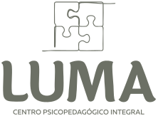
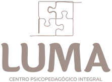
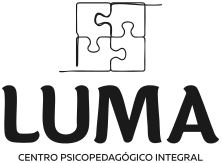
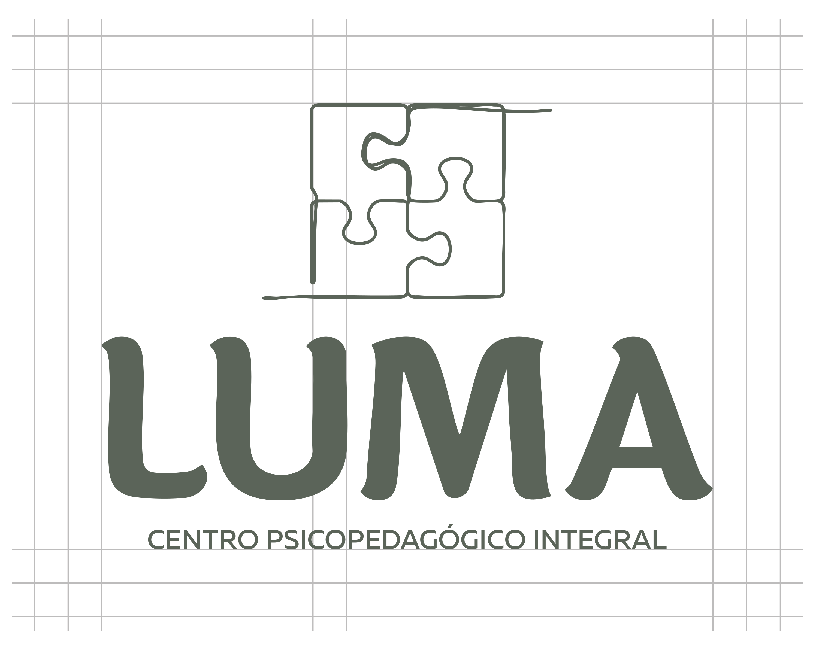

Identidad, voz y reglas de contenidoLUMA Centro Psicopedagógico Integral
01 · Esencia de marca
Quiénes somos y a quién le hablamos
LUMA es un centro psicopedagógico integral dirigido por la Lic. Julieta Gárate (Juli), que acompaña procesos de aprendizaje y de elección en todo el ciclo vital.
Propósito
Acompañar a cada persona a conocerse, reconocer sus fortalezas y construir su proyecto de vida, con mirada psicopedagógica.
Servicios
Clínica psicopedagógica
Orientación vocacional y ocupacional (OVO)
Servicios educativos
Modalidad virtual. En contenido de campaña se habla desde la necesidad de la consulta, no desde la modalidad.
Enfoque OVO
Autoconocimiento, identificación de fortalezas y construcción del proyecto de vida. Los tests (CHASIDE, SDS de Holland, cuestionario de valores) son una parte: el proceso integra intereses, contexto, mandatos familiares e historia personal.
Profesional
Lic. Julieta Gárate, psicopedagoga. Prof. de Nivel Inicial, Lic. en Psicopedagogía, Lic. en Educación. Ejerce en todo el ciclo vital.
Siempre en presente. Nunca decir que Juli trabaja solo en LUMA ni que LUMA nació de la orientación vocacional.
Dos públicos, dos conversaciones
Familias / padres
Adolescentes
Rol
Quienes deciden y pagan
Protagonistas del proceso
Qué buscan
Entender cómo ayudar a su hijo/a a elegir con confianza
Saber quiénes son y hacia dónde quieren ir
Cómo les hablamos
"Tu hijo/a…", tono cercano y profesional, foco en acompañar
Directo a la persona, tono cercano, foco en conocerse
CTA típico
"¿Tenés dudas? Escribinos"
"Mandáselo a alguien que lo está pensando"
Argentina: voseo (tenés, sos, escribinos). LATAM / Miami: tuteo (tienes, eres, escríbenos). Nunca mezclar en una misma pieza.
Embudo
Consulta → llamada introductoria gratuita (familia + adolescente juntos) → sesión individual paga con el adolescente → cierre breve con la familia → sesiones siguientes agendadas al final de cada sesión.
Diferencial
Mirada integral
La elección se piensa con la historia, los intereses, los valores y el contexto de cada persona, más allá del resultado de un test.
Formación triple
Nivel Inicial, Psicopedagogía y Educación: una lectura del aprendizaje a lo largo de todo el ciclo vital.
La familia incluida
El proceso integra a la familia en momentos definidos, con el adolescente en el centro.
Slogan / frase de marca, si se define. Hoy no hay uno oficial.
02 · Logo
Un rompecabezas que encaja
Isotipo de cuatro piezas en trazo continuo, wordmark "LUMA" y bajada "CENTRO PSICOPEDAGÓGICO INTEGRAL". Archivos vectoriales en assets/, extraídos del manual oficial.
Versiones

Full color · gris oliva sobre fondos claros. Versión principal.
Blanco · sobre gris oliva, salvia claro o foto con velo.

1 solo color · en taupe (o gris oliva).

B&N · cuando los colores de la paleta no están disponibles.
Perfil / destacadas · logo en blanco sobre círculo salvia claro.
Isotipo solo · fondos de stories y piezas donde la marca ya está presente.
Área segura

Según la grilla del manual, el módulo x equivale al grosor del asta vertical de la "U". Alrededor del logo se deja un margen libre de 2x por lado: nada de texto, bordes de slide ni otros elementos dentro de esa zona.
Referencia práctica: 2x ≈ 11% del ancho del logo.
Reglas de uso
Siempre
Solo en los colores de la paleta; si no están disponibles, en escala de grises.
Proporciones originales, con su área segura.
Sobre fondos lisos o fotos con velo que aseguren lectura.
Nunca
Recolorear fuera de la paleta, agregar sombras o contornos.
Deformar, rotar o separar el isotipo de la bajada en la versión completa.
Usarlo sobre zonas de foto con mucho detalle.
Tamaño mínimo de reproducción (digital e impreso): el manual no lo define.
El encabezado del manual dice "LUMA CENTRO PEDAGÓGICO". El nombre correcto es LUMA Centro Psicopedagógico Integral (como figura en el propio logo). Conviene pedirle a la agencia que actualice el manual.
03 · Color
Paleta oficial
Cuatro colores del manual de marca. El salvia claro y el gris oliva sostienen los fondos; el rosa arena y el taupe acentúan.
Blanco#FFFFFF Texto sobre gris oliva, bordes de stickers, etiquetas tipo cinta.
Crema
Crema con textura de papel#F6F2EA(provisorio) Fondos claros alternativos al salvia.
HEX exacto del crema texturado que se usa en el feed (tomarlo del brand kit de Canva kAGRLHSzN70).
Combinaciones y contraste
Texto / fondo
Contraste
Uso
Blanco sobre gris oliva
5,1 : 1
Todo: títulos y cuerpo. Es la combinación más legible de la paleta.
Gris oliva sobre crema
4,5 : 1
Todo: títulos y cuerpo.
Gris oliva sobre rosa arena
3,1 : 1
Títulos, etiquetas y cuerpo breve en tamaño grande.
Blanco sobre taupe
3,1 : 1
Títulos y etiquetas. Evitar párrafos.
Gris oliva sobre salvia claro
2,5 : 1
Títulos grandes en Calistoga (desde ~64 px en 1080). Para párrafos sobre salvia, usar cuerpo grande y Medium/SemiBold.
Salvia claro sobre gris oliva
2,5 : 1
Títulos grandes y palabras clave en bold dentro del cuerpo blanco.
Blanco sobre salvia claro
2,1 : 1
Solo logo e isotipo. Evitar texto.
La paleta es suave por diseño: el contraste se gana con tamaño y peso. Si hiciera falta un tono más oscuro para textos largos, conviene definirlo con la agencia.
No usar los valores de referencia anteriores (#7A8765, #F4ECD8, #3F4635) ni Cambria/Calibri: eran aproximaciones para documentos. En piezas de marca, el manual manda.
04 · Tipografía
Calistoga dice, Metropolis explica
Calistoga (Google Fonts) para títulos y Metropolis (libre, Fontsource) para cuerpo y subtítulos. Las dos están en assets/fonts/.
Un proceso de autoconocimiento que ayuda a entender tus fortalezas y tu historia.
Título de reelMetropolis Bold blanco sobre el video de Juli
La orientación vocacional
Reglas de énfasis
Una sola frase clave por título: subrayada, o en Calistoga dentro de un título combinado. No las dos a la vez.
En el cuerpo, palabras clave en SemiBold/Bold (máximo dos o tres por slide); sobre gris oliva pueden ir en salvia claro.
Mayúsculas sostenidas solo en subtítulos y pastillas de Metropolis.
05 · Recursos gráficos
Catálogo del feed
Los recursos que ya forman parte del lenguaje visual de LUMA, con un ejemplo de cada uno. Usar uno o dos por slide.
Líneas onduladas finasSobre salvia claro o crema, en la mitad inferior. Base para apoyar recortes.
Recorte tipo stickerPersonas reales recortadas con borde blanco grueso y sombra suave, apoyadas sobre las líneas.
Foto con velo
Foto a sangre con veloFoto real a sangre con un velo de gris oliva hacia la zona del texto.
¿qué carrera elegir?
Subrayado de frase claveLa palabra o frase central del título, subrayada en el mismo color del texto.
Tu hijo no sabequé estudiar?
Título combinadoSans liviana para el contexto y Calistoga para la parte clave.
3TIPS
Número grandeCalistoga en rosa arena para piezas de listado.
¿qué querésestudiar?
Etiquetas tipo cintaPalabras sobre papel blanco recortado, levemente giradas.
Hoy celebramos a quienes enseñan
Resaltador rosaTrazo de rosa arena detrás de una sola palabra.
Mirá esto
Garabatos y flechas a manoTrazos simples que señalan o subrayan. Uno por slide.
Mis intereses: leer, armar cosas, escuchar a otros…
Hoja de cuadernoRayada, con margen rosa, para listas y preguntas.
5 HÁBITOSRutinas que ordenan la semana de estudio
Recuadro con pastillaBordes redondeados y título en pastilla gris oliva.
Foto circular junto al texto
¿Tenés dudas? Escribinos
Avatar, indicador y botónFoto circular, puntos de paginación arriba a la derecha y botón en gris oliva con Calistoga.
06 · Composición
Tres fondos que se alternan
Salvia claro o crema texturado con líneas onduladas, gris oliva liso y foto real a sangre con velo. Ninguna slide repite el fondo de la anterior.
Elegir es un proceso
Subtítulo en Metropolis
A · Claro texturado. Títulos en gris oliva. Líneas onduladas y recorte tipo sticker.
Una ideapor slide
Cuerpo en Metropolis, con la palabra clave en salvia claro.
B · Gris oliva liso. Texto en blanco y acentos en salvia claro. Ideal para gancho o cierre.
Foto con velo
Texto sobre la zona velada
C · Foto a sangre. Velo de gris oliva para asegurar la lectura en blanco.
Zonas seguras y márgenes
Zona de texto 920 × 1110 px
Carrusel 1080 × 1350. Márgenes de 80 px a los lados y 96 px arriba y abajo. La línea punteada marca el recorte 3:4 de la grilla del perfil (≈ 40 px por lado): en la portada, el título queda dentro.
Interfaz superior · 220 px
Caption y botones · 420 px
Iconos · 120 px
Título y texto en pantalla
Reel 1080 × 1920. Evitar texto en los 220 px superiores, los 420 px inferiores y la franja derecha de íconos. Para la portada del reel en la grilla, mantener el título en el centro 1080 × 1350.
Las medidas de interfaz de Instagram son de referencia y cambian con las actualizaciones de la app: verificar en una vista previa antes de publicar.
Reglas rápidas
Foto
Personas reales, luz natural. El texto va siempre sobre la zona velada o lisa, nunca sobre caras ni detalle.
Negritas y emoji
Bold solo en palabras clave. Emoji: solo 🌿, como mucho uno por pieza, preferentemente en el caption.
07 · Voz y tono
Cálida, directa y afirmativa
Conversacional, concisa, cálida pero directa. Rigor psicopedagógico traducido a lenguaje accesible, sin simplificar de más.
Encuadre positivo
Todo en lenguaje afirmativo y de ganancia. Sin "no" ni "sin" en los CTA; hooks de anuncio siempre en positivo.
Desde la necesidad
En campaña se vende la necesidad de la consulta, no el producto ni la obligación: nada de cantidad de sesiones ni modalidad.
Sin relleno
Cada frase aporta. Nada de "¡Genial!" ni muletillas de entusiasmo.
Palabras y frases prohibidas
Evitar
Usar en su lugar
trabajamos
acompañamos · orientamos en función de
entorno
contexto · familia · escuela (lo concreto)
trabajé con…
acompaño a… (siempre en presente)
qué te mueve / lo que te mueve
conocerte · saber quién sos
rechaza · lenguaje clínico duro
le cuesta · todavía está buscando · palabras cotidianas
no hay nada mal en vos · no es un fracaso
Nombrar lo esperable en afirmativo: "Es parte de esta etapa"
Reservá tu primera sesión · cantidad de sesiones · 100% virtual (en campaña)
"¿Tenés dudas? Escribinos"
LUMA nació de la orientación vocacional · Juli trabaja solo en LUMA
LUMA como centro psicopedagógico integral; Juli como psicopedagoga que ejerce en todo el ciclo vital
Seguinos · seguí la cuenta
CTA de conversación o de compartir
Centro Pedagógico
LUMA Centro Psicopedagógico Integral
Así sí / así no
Así noTrabajamos la orientación vocacional con tu hijo.
Así síAcompañamos a tu hijo/a a conocerse para elegir con confianza.
Así noDescubrí qué te mueve.
Así síConocerte es el primer paso para saber hacia dónde querés ir.
Así noNo saber qué estudiar no es un fracaso.
Así síLlegar a esta etapa con preguntas es parte del proceso.
Así noReservá su primera sesión: un programa de 4 sesiones.
Así sí¿Tenés dudas sobre cómo acompañar su elección? Escribinos.
Así noTu hijo rechaza estudiar y el entorno lo presiona.
Así síCuando a tu hijo/a le cuesta decidir, conocerse le da claridad.
Así noDurante años trabajé con adolescentes en LUMA.
Así síAcompaño a adolescentes y familias en la construcción de su proyecto de vida.
08 · Carrusel y CTA
Cinco slides, cinco ideas
Máximo 5 slides. Cada slide aporta una idea distinta: nunca el mismo concepto dicho con otras palabras.
PortadaHook en positivo. Título en Calistoga con la frase clave subrayada.